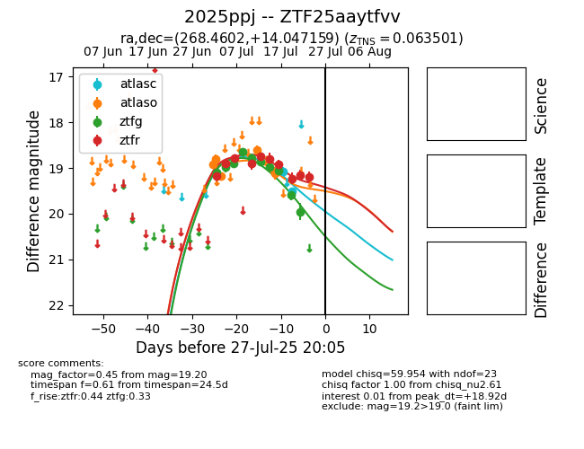

Target 2025ppj at 2025-07-27 20:05, see:
FINK: fink-portal.org/2025ppj
Lasair: lasair-ztf.lsst.ac.uk/objects/2025ppj
ALeRCE: alerce.online/object/2025ppj
TNS: wis-tns.org/object/2025ppj
YSE: ziggy.ucolick.org/yse/transient_detail/2025ppj
alt names
ZTF25aaytfvv (ztf,fink)
2025ppj (tns,yse)
coordinates:
equatorial (ra, dec) = (268.4602,+14.04716)
galactic (l, b) = (39.3693,+18.98846)
photometry
last atlasc=19.51, atlaso=19.12, ztfg=19.95, ztfr=19.20
2 atlasc, 5 atlaso, 10 ztfg, 10 ztfr detections
